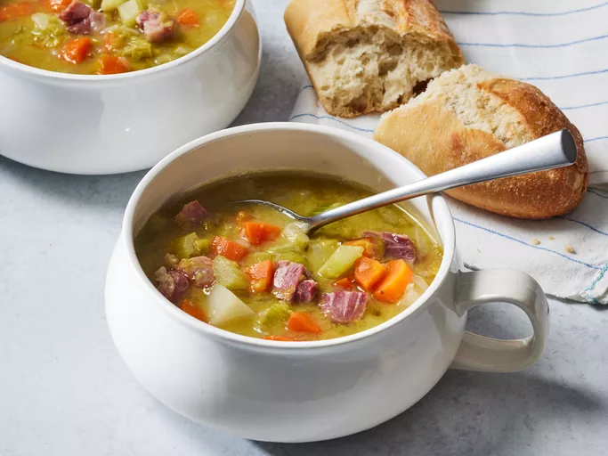

Split Pea Soup recipe

Photos of Split Pea Soup
This flavorsome split pea soup is a great way to use a leftover ham bone. It makes a nourishing, hearty meal on a blustery fall or winter day.
Ingredients
- Dried split peas: Find dried split peas on the dried beans and rice aisle.
- Cold water: You'll need two quarts of cold water for this soup.
- Ham bone: A ham bone is cooked with the peas, adding a wonderfully meaty flavor.
- Vegetables: You'll need two onions, three carrots, three celery stalks, and one potato.
- Spices and seasonings: This split pea soup recipe is seasoned with salt, black pepper, and dried marjoram.
Steps
- Place split peas in a large stockpot and cover with cold water; let soak, about 1 hour.
- Drain and rinse peas; add two quarts of cold water, ham bone, onions, and seasonings to the pot.
- Bring to a boil, then simmer for about 90 minutes.
- Remove the meat from the ham bone and return the meat to the pot.
- Add the vegetables and cook until the vegetables are tender.
- Add the vegetables and cook until the vegetables are tender.
Home